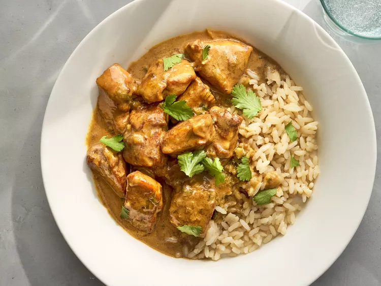

Fragrant Thai Green Curry

Delicious Thai Green Curry
Packed with flavour and spice and all things nice, this Thai Green Curry can be made with chicken or in a vegetarian style. Either way you'll love it!
Ingredients
- Dark Soy Sauce
- Plain Flour
- Chicken breast, cubed
- Green curry paste
- Oniones, chopped
- Garlic gloves, crushed or chopped
- Fresh ginger, grated
- Coconut milk
- Sugar to taste
- Fish sauce
- Coriander
Method
- Coat chicken in soy sauce, then in flour
- Fry chicken until browned, then set aside
- In the same pan, heat up curry paste, then add onions, garlic and ginger and cook until fragrant
- Add chicken to the pan and stir, coating the chicken in the curry and spice mix
- Stir in coconut milk, fish sauce, sugar, some more dark soy sauce then simmer for 20 minutes and until chicken is cooked through
- Garnish with coriander
Suggestion:This curry is great with rice!